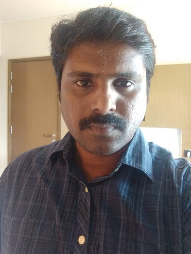

A Highly-motivated Cloud IoT Technical Architect from TN,India who is currently a Research Scholar doing research to conserve energy and CO2 emission in smart city to drive economic growth and improve the quality of life of people.
Hi, I am Vijayaram' personal AI assistant. I am built on top of the pre-trained USE-lite model for QnA task from TensorFlow-js. Please ask me anything about him with a complete sentence (e.g: "Where does he live now" not "location") and I'll try my best to answer your queries :)
Intro
Three words for Vijayaram: strong-willed, fast-learner, effective.

Vijayaram Boopalan is a Technical Architect and Research Scholar who always hungry for new knowledge. He pursued a Distributed Computing Systems major at one of the top universities in India,
Podicherry University, in May 2007, he just started his PhD in Kalasalingam University expected to complete by 2023 or 2024.
Vijayaram is an AI/ML, Mobile Edge Computing, Vehicular Edge Computing Enthusiast who is also familiar working with data analytics using python as well. Vijayaram has experienced as an software developer, Architect in various industry domains like Comfort Automation, Industrical Security, Sustainability, etc., (Honeywell),
Home Comfort and Security Solutions (Resideo),
Legal Software Solutions (Infosys),
Medical and Radiology Software Solutions (HCL),
E-Publishing for Elesiver, Springer, Cambridge, Oxford Press (Straive).
Currently, Vijayaram is working as a Sr Advanced Software Engineer at Honeywell.
What they said about Vijayaram
Working in the same team with Vijayaram is awesome and memorable, as stated by his colleagues.
A Life Outside of Work
Vijayaram loves to spent his spare time doing his hobbies:
explore and travel, conducting side-projects, and writing articles.
He also loves to give back to the community by sharing his experiences and knowledge.
Finally, Vijayaram loves to meet new friends!
So, please feel free to reach him out if you have any topics to be discussed.
C#,.Net Core, Asp.Net Core WebAPi, Python, SQL, Git, Docker, Design and Architecture, IoT, Microsoft Azure Cloud, Cyber Security, Matlab
Working Experience
Research Scholar - KLU,TN
Jan 2021 - Present
Working on Task Offloading and Resource Allocation Optimizations in Mobile Edge Computing
Actively contributing in several internal journals and external article publications
Sr Advanced Software Architect - Honeywell
Oct 2019 - till now
As a Sr. Advanced Software ARchtiect for Smart City product in Honeywell International, Designed and architected SCADA Integeration(Microgrid) and Weather Integeraion
As a Sr. Advanced Software Engineer for Prowatch enterprise security product in Honeywell International
Developed Alarm and Events Integeration from different systems and products seemlessly into a single plane of glass Intelligent Command
As a Product Cyber Security Advocate ensured the product releases are in compliant with the security standard defined. Also provided the team suggestion and design to address those security vulnerabilities
Architect - Wipro
Aug 2019 - Oct 2019
Worked as an Architect consultant to SHELL International
Technology Specialist - Resideo
Oct 2018 - July 2019
As a Cloud Dev Ops, I have created entire Cloud Infrastructure and CI&CD for the rapid product delivery using tools like Bamboo, Octopus, Batching Scripting, Powershell, Azure Resource Manager (ARM Templates)
As a Cloud Technology Specialist developed and managing microservices of Resideo Thermostats which is happily servicing more than 5 million global customers
Technology Specialist - Honeywell
July 2014 - Oct 2018
As a Cloud Technology Specialist developed and managing microservices of Honeywell Thermostats which is happily servicing more than 5 million global customers
Technology Lead - Infosys
March 2010 - June 2014
As a Tech Lead i have developed and mentored Online Fullfillment Team for a North America based E-Publishing Customer
Member Technical Staff - HCL
July 2007 - Feb 2010
As a developer worked on enhancement of Konica Minolta Image Pilot product
As a developer worked on NAS backup tool as part of Konica Minolta Image Pilot product
Junior SGML Technician - Spi Global
Aug 2004 - Aug 2005
Worked as an Manuscript Conversion Engineer for popular Research publishing companies like Elsevier, Oxford University Press, Cambridge University Press, etc
Education
Kalasalingam University
Doctor of Philosophy - Mobile Edge Computing, AI/ML | Grade: A
Pondicherry Engineering College
Master of Technology - Distributed Computing Systems | GPA: 6.8/10
Honours and Awards
Type
Description
Provider
Award
HCL Star Performer Award for the year 2009 – 2010 for excellent performance in the development of DVD and NAS Backup and Restore
HCL
Appreciation
Client appreciation certificate for successfully releasing a business impacting project IDEX for the year 2011 in Infosys
Infosys
Appreciation
Client appreciation for successfully releasing EROD build on legacy PROGRESS 4GL language, which has save 420 K $ / year for the year 2013 in Infosys
Honeywell
Award
Outstanding Achiever Award - Year 2016 in Honeywell for developing and delivering CI and CD process and tools and moving the legacy on premise applications to Azure Cloud
Honeywell
Cash Award
Bronze, Silver Awards from Honeywell for various successful project releases
Honeywell
Technical
Microsoft Certified Technology Specialist (MCTS)
Microsoft
Technical
IBM certified Database Associate DB2 UDB 8.1
IBM
Technical
Developing Enterprise Applications using .Net Framework
NIIT
Technical
Diploma in Computer Hardware and Networking
RITS
Volunteer Experience
Project Guide and Data Science Mentor - IIT Student
Jan 2020 - Mar 2020
As a Project Guide, Mentored for an IIT student who is interested in doing Data Science project in Security Domain based on real time use case
Data Science Instructor for 1 Credit Course - Thiyagaraja Engineering College, TN, India
Mar 2021 - Apr 2021
As an Instructor for providing insights applying Data Science in Industrial Solutions
Take control of your home comfort and save on energy costs with a Honeywell Home thermostat from Resideo. From smart WiFi thermostats with room sensors and humidification control, to programmable and non-programmable thermostats, Resideo products meet a variety of needs.
All-in-one console software for small facilities that combines the DR/CR console and Mini-PACS functions. It is applicable for radiography and various imaging needs in hospitals.
Vijayaram, B., Vasudevan, V. Wireless edge device intelligent task offloading in mobile edge computing using hyper-heuristics. EURASIP J. Adv. Signal Process. 2022, 126 (2022). https://doi.org/10.1186/s13634-022-00965-1